PHP 기반 백엔드 개발자로서 쇼핑몰 통합관리 시스템에서 주문, 상품, 클레임, 배송, 통계, 내부 운영 기능을 개발·유지보수해왔습니다. 외부 API 연동과 내부 관리자 시스템 개발을 함께 수행했고, 실제 운영 환경에서 발생하는 장애와 데이터 정합성 이슈를 로그와 데이터 흐름을 기반으로 분석하고 재발 방지 구조로 개선하는 데 강점이 있습니다.
약 175개 쇼핑몰 API 연동 로직 개발 및 유지보수를 수행했고, 누적 작업 경험은 2200건 이상입니다. 주문·상품·클레임 연동뿐 아니라 택배사 송장 발번/출력 시스템, 고객사 운영 관리, 통계 대시보드, 내부 API 및 배치 프로그램까지 폭넓게 담당했습니다. 특히 대형 고객사 커스터마이징과 운영 이슈 대응 경험이 많아, 단순 기능 구현보다 실제 서비스 안정성과 운영 효율을 함께 고려하는 개발 방식을 지향합니다.
다양한 플랫폼의 인증 방식, 데이터 포맷, 주문/클레임 구조 차이를 고려한 API 연동 및 유지보수 경험
신규 개발, 기능 개선, 운영 이슈 대응, 고객사 커스터마이징, 배치 및 내부 운영 기능까지 폭넓게 수행
대량 발번 지연 이슈 대응 과정에서 비동기 처리와 재시도 로직을 적용해 성공률과 처리 속도를 개선
약 175개 쇼핑몰 API 연동 로직 개발 및 유지보수를 수행했고, 누적 작업 경험은 2200건 이상입니다. 주문·상품·클레임·배송 연동뿐 아니라 내부 운영 관리자 시스템과 데이터 분석 페이지까지 직접 구현했습니다.
고객사의 계약, 테스트 일정, 연동 현황 등을 시각화하여 수작업 없는 통합 모니터링 관리 도구를 구축했습니다.
개발자 수작업 없이 고객사와 운영팀이 직접 특정 기간 재고 연동 상태를 제어할 수 있는 셀프 서비스 메뉴를 개발했습니다.
다중 택배사 API를 활용해 대량 주문 시 명절 시즌 지연 현상을 쉘 스크립트 비동기 처리 구조로 개선했습니다.
프로모션 시점에 맞춰 상품 정보(등록, 수정) 전송 작업을 사용자가 설정한 시간에 일괄 자동 배포해주는 예약 시스템을 개발했습니다.
실제 운영 중인 쇼핑몰 통합관리 시스템에서 배포 및 데이터 동기화, 예약, 택배 자동 연동 작업 등을 수행하고 업로드했던 실제 작업 이력들입니다. 이미지 클릭 시 상세 내용을 확대하여 확인하실 수 있습니다.
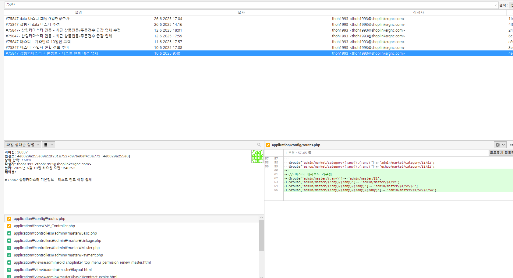
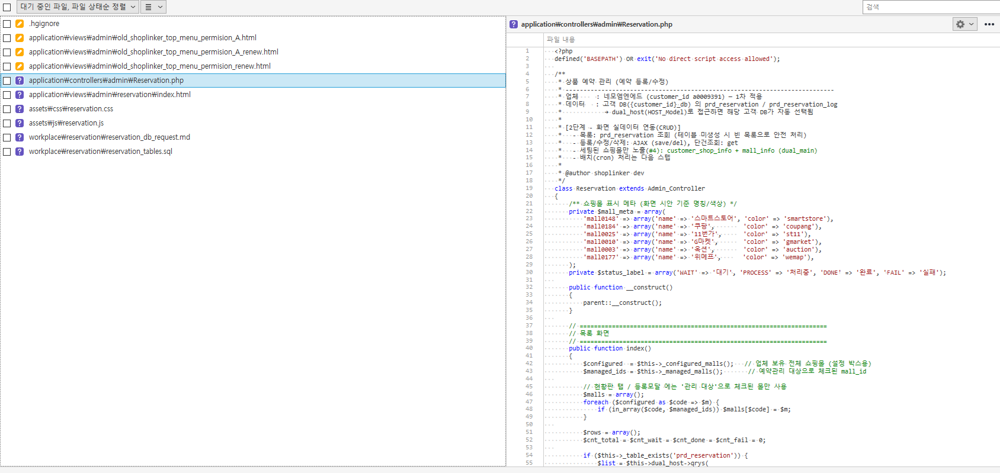
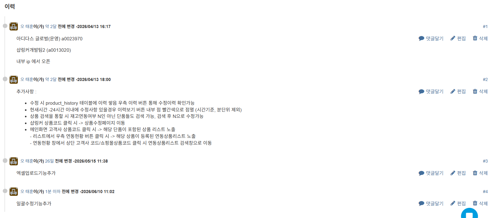
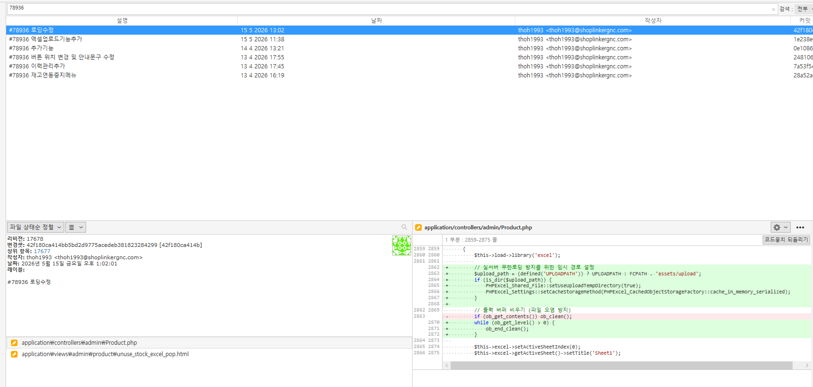
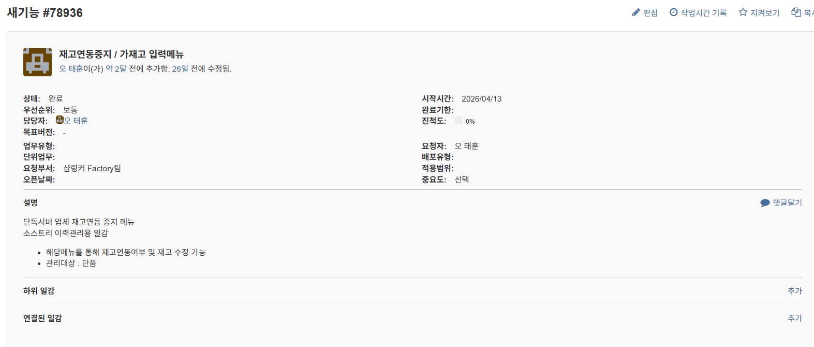
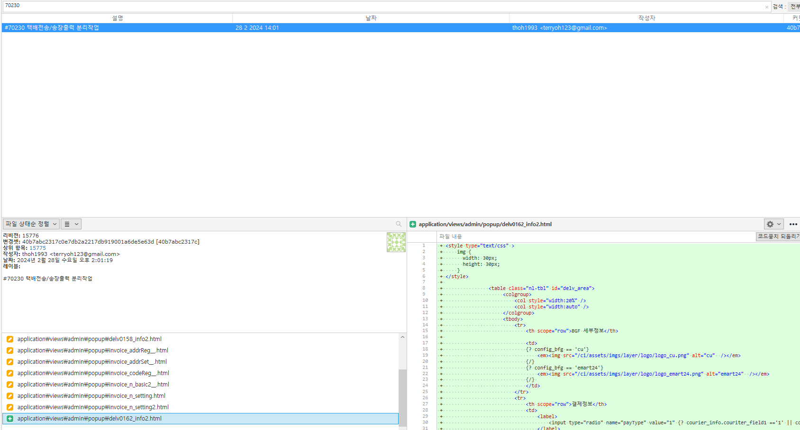
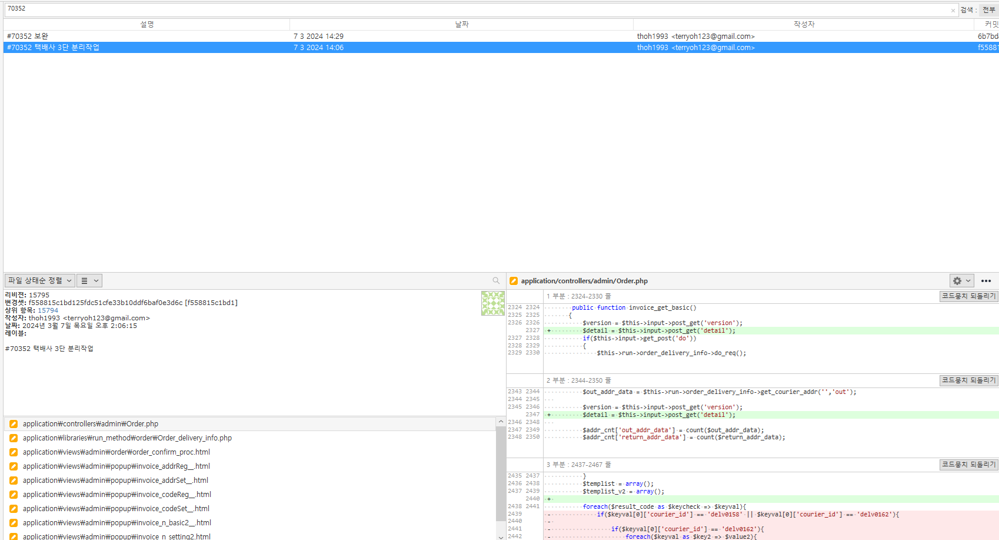
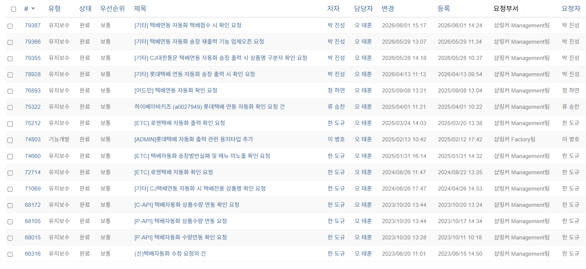
Name: 오태훈
Position: Backend Developer
Experience: 4년 (2022.03 ~ 현재)
Email: thoh1993@naver.com
고객사 운영 상태를 빠르게 파악할 수 있도록 고객사 현황, 계약 만료 예정 업체, 테스트 만료 예정 업체, 연동 현황, 시간·요일별 가입 HeatMap 등을 한 화면에서 확인할 수 있는 내부 운영·분석 시스템을 개발했습니다.


대형 고객사의 프로모션 및 운영 정책에 따라 특정 기간 동안 상품별·쇼핑몰별 재고 연동을 중지하거나 수동 재고 입력 요청이 빈번하게 발생했습니다. 기존에는 내부 개발자가 직접 DB 수정 및 소스 예외처리를 통해 대응했으나, 이를 고객사와 운영팀이 직접 관리할 수 있도록 재고연동/관리 메뉴를 구축했습니다.
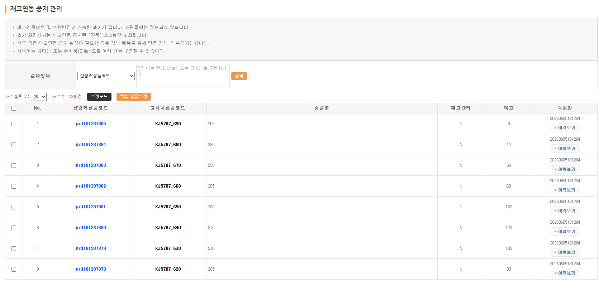
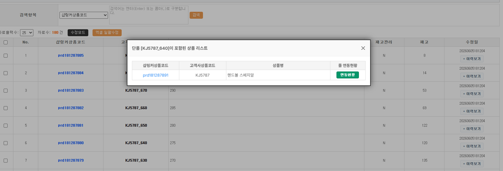
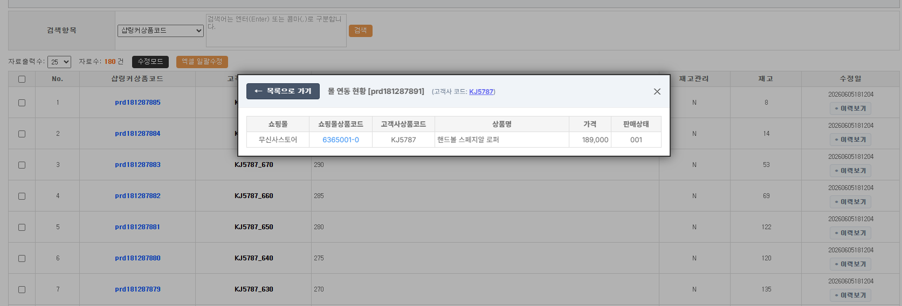
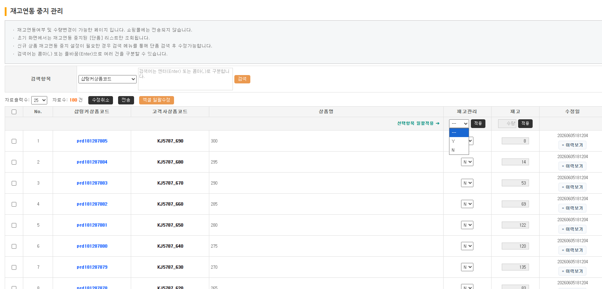
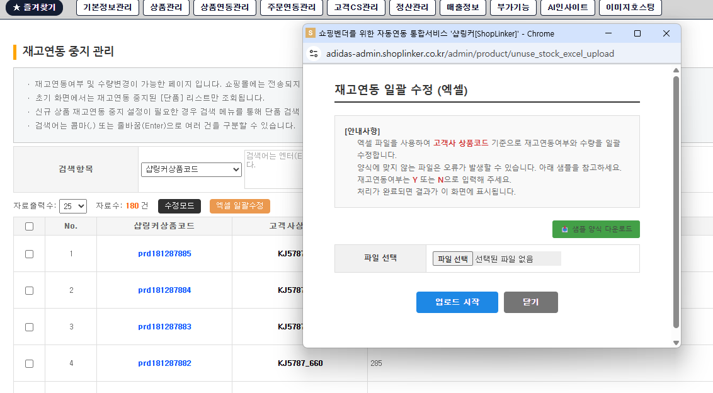
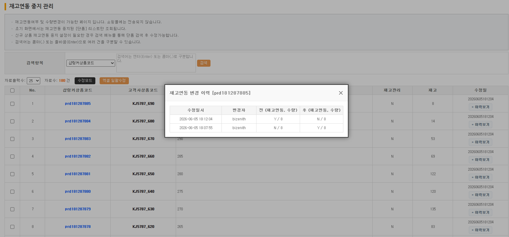
여러 택배사 API와 연동하여 송장 자동발번, 출력, 전송 결과 이력관리까지 처리하는 시스템을 개발하고 유지보수했습니다. 단순한 API 호출 수준이 아니라 대량 주문 처리 상황에서도 안정적으로 동작하도록 구조를 개선했습니다.
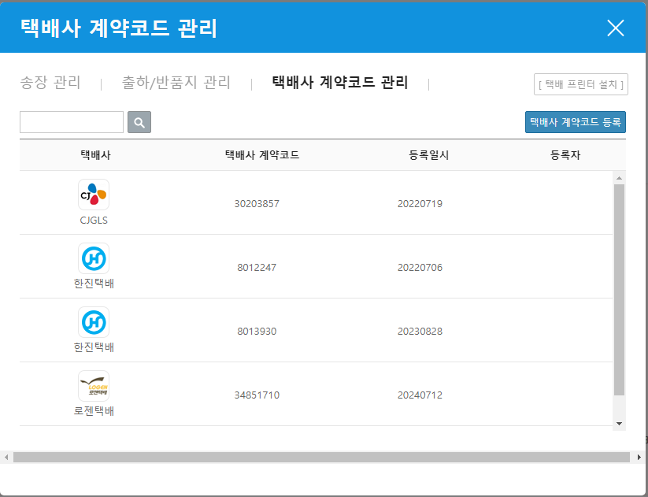
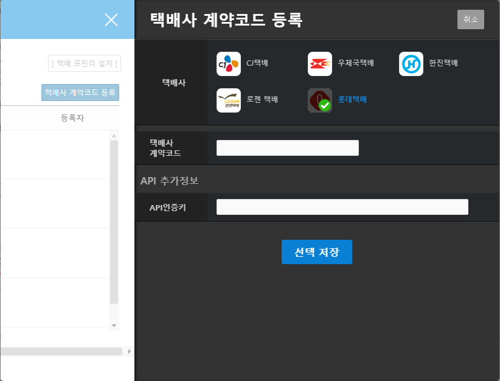
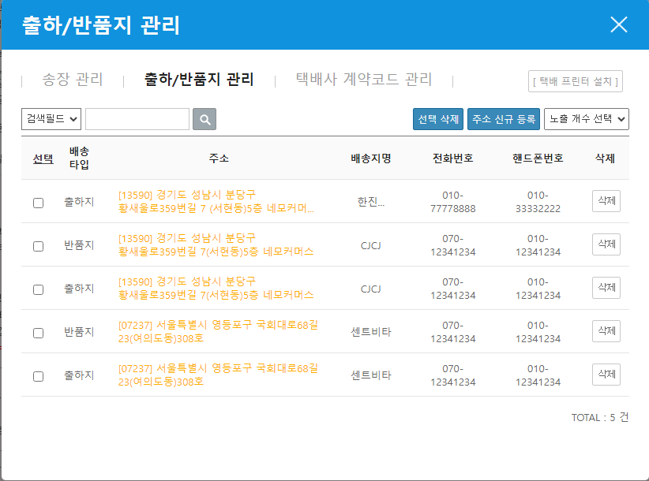
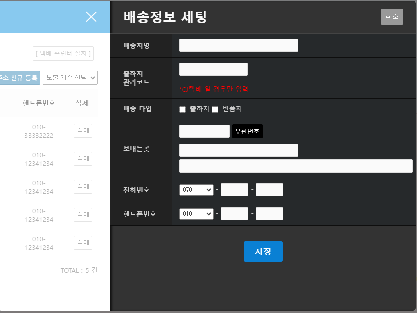
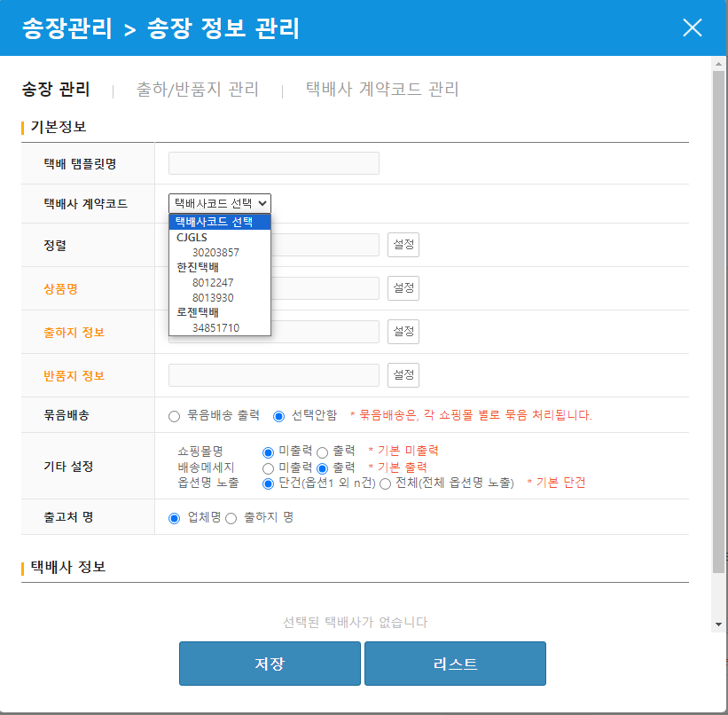
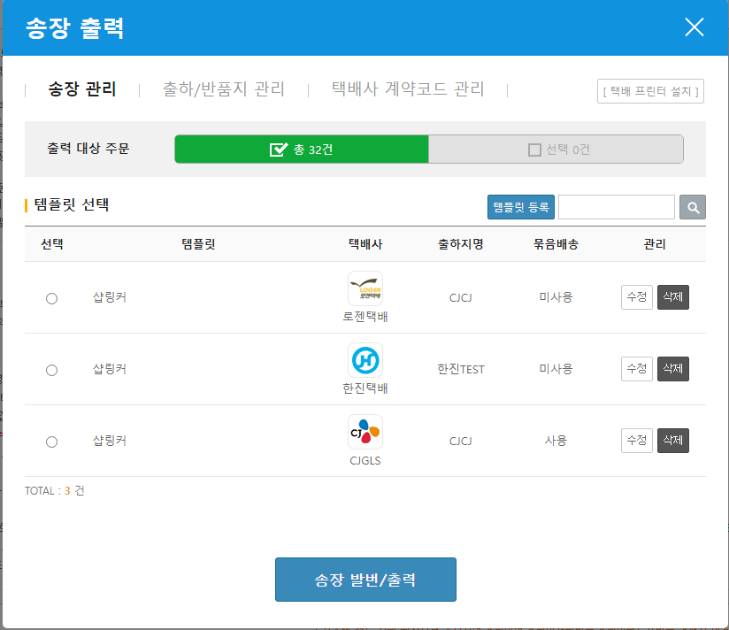
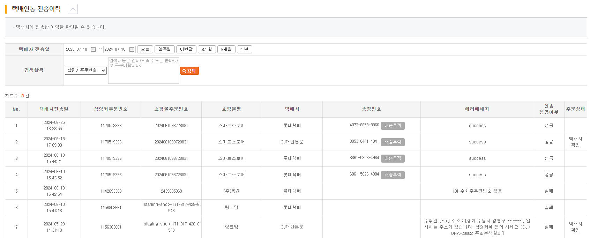
이커머스 운영 환경에서 특정 프로모션이나 시즌 이벤트 시점에 맞춰 상품의 등록 및 수정(판매 여부, 재고, 가격 등) 작업을 수동으로 처리하던 리스크를 방지하기 위해, 사용자가 지정한 미래 시점에 상품 등록/수정 작업을 자동으로 스케줄링하여 다수의 쇼핑몰 API로 일괄 연동해주는 예약 처리 시스템을 설계하고 구현했습니다.